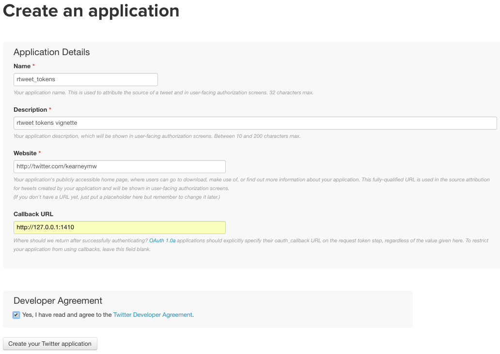
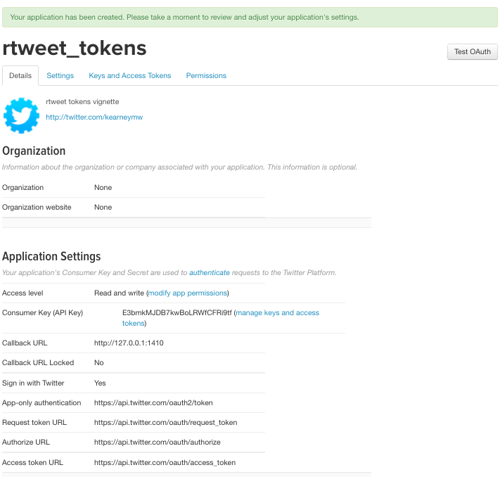
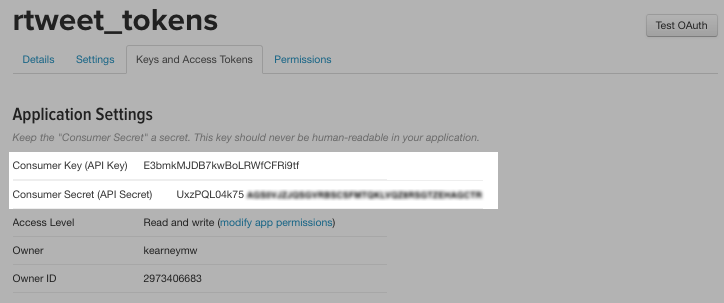

This vignette covers how to obtain and use Twitter API access tokens for use in the rtweet package.
# install from CRAN
install.packages("rtweet")
# load rtweet
library(rtweet)Name, Description, and Website of your choosing (example screenshot provided below).Callback URL field, make sure to enter the following: http://127.0.0.1:1410

Keys and Access Tokens to retrieve your consumer (api) and secret keys.
To create a personal access token, users must provide their Consumer Key (aka “API Key”) and Consumer Secret (aka “API Secret”).
I’ve highlighted the keys in the screen shot below.

Copy and paste these keys into an R script file and assign them to objects like I’ve done in the code below.
Once the keys are read into R, use create_token() and store the output as twitter_token.
## whatever name you assigned to your created app
appname <- "rtweet_token"
## api key (example below is not a real key)
key <- "XYznzPFOFZR2a39FwWKN1Jp41"
## api secret (example below is not a real key)
secret <- "CtkGEWmSevZqJuKl6HHrBxbCybxI1xGLqrD5ynPd9jG0SoHZbD"
## create token named "twitter_token"
twitter_token <- create_token(
app = appname,
consumer_key = key,
consumer_secret = secret)NOTE: Following the steps outlined above, it’s possible to create multiple Twitter apps, resulting in multiple tokens. Twitter discourages abusing their API rate limits (these are like speed limits, regulating the amount of requests you can make within a given period of time). Abusing Twitter rate limits can even result in Twitter completely revoking your API access. However, Twitter does allow users multiple tokens so long as each token is used for a unique purpose..
At this point, you technically have enough to start using rtweet functions—you’d just need to set the token argument equal to twitter_token (the token object we just created).
Rather than creating a token every time you open R, remembering where you saved your token(s) or passwords, and specifying a token every time you use a function, users are encouraged to save tokens as an environment variable.
To save a personal access token as an environment variable, save the twitter_token object created earlier in your computer’s home directory (to locate your home directory, you can enter normalizePath("~/") into your R console, or follow the directions below for what I think is the easiest method).
Use saveRDS() to save twitter_token to your home directory. The code below should locate and construct the path to your home directory for you. Assuming you’ve saved your token as twitter_token, the final line in the code below will save your token for you as well.
## path of home directory
home_directory <- path.expand("~/")
## combine with name for token
file_name <- file.path(home_directory, "twitter_token.rds")
## save token to home directory
saveRDS(twitter_token, file = file_name)Create a plain text file containing the path to your token object and save it to your home directory as “.Renviron”.
To create a plain text file in R, modify the code below. Change TWITTER_PAT location to match the path you used earlier (in the example below, you’d want to change “/Users/mwk/twitter_token.rds”). You can also create a plain text document in any text editor like TextEdit or Notepad. If you’re using Rstudio, select File > New File > Text File.
Important: Make sure the last line of “.Renviron” is blank. I achieved this in the code below by including fill = TRUE in the cat function.
## On my mac, the .Renviron text looks like this:
## TWITTER_PAT=/Users/mwk/twitter_token.rds
## assuming you followed the procodures to create "file_name"
## from the previous code chunk, then the code below should
## create and save your environment variable.
cat(paste0("TWITTER_PAT=", file_name),
file = file.path(home_directory, ".Renviron"),
append = TRUE)Restart R so it can process the environment variable.
If you completed the steps successfully, you should be able to use rtweet functions without specifying [or even thinking about] tokens [ever again].
That’s it!